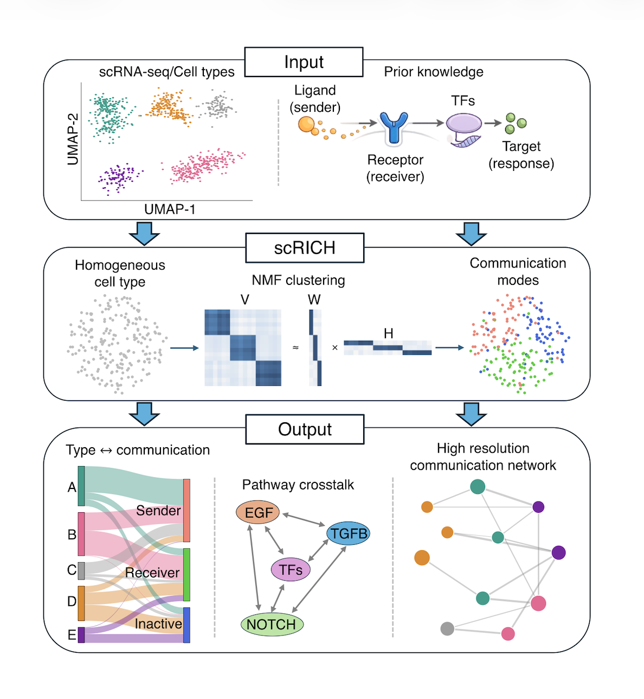
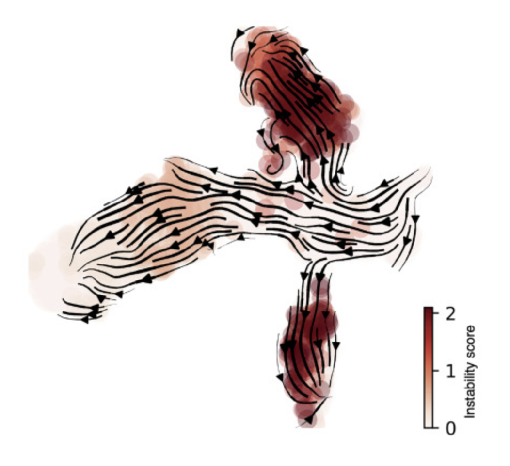
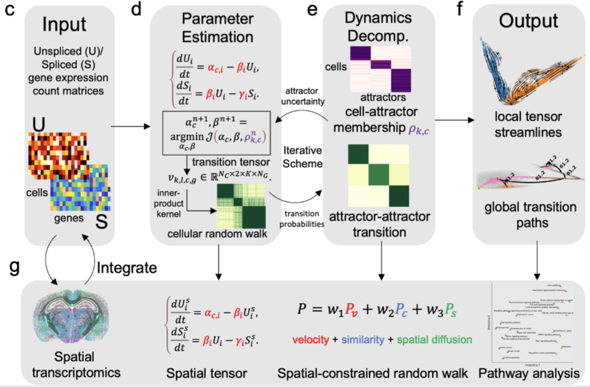
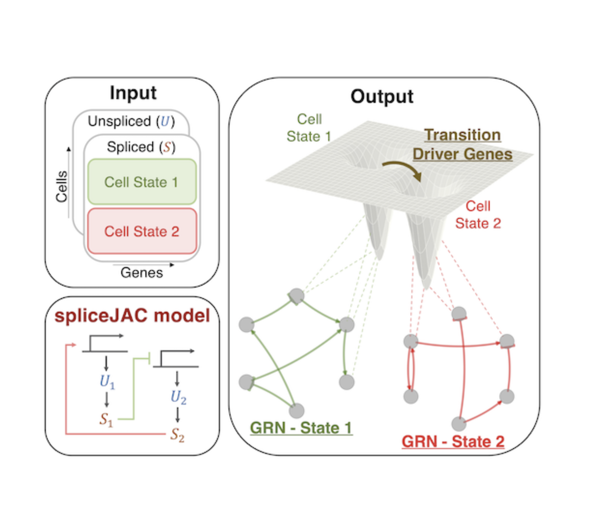
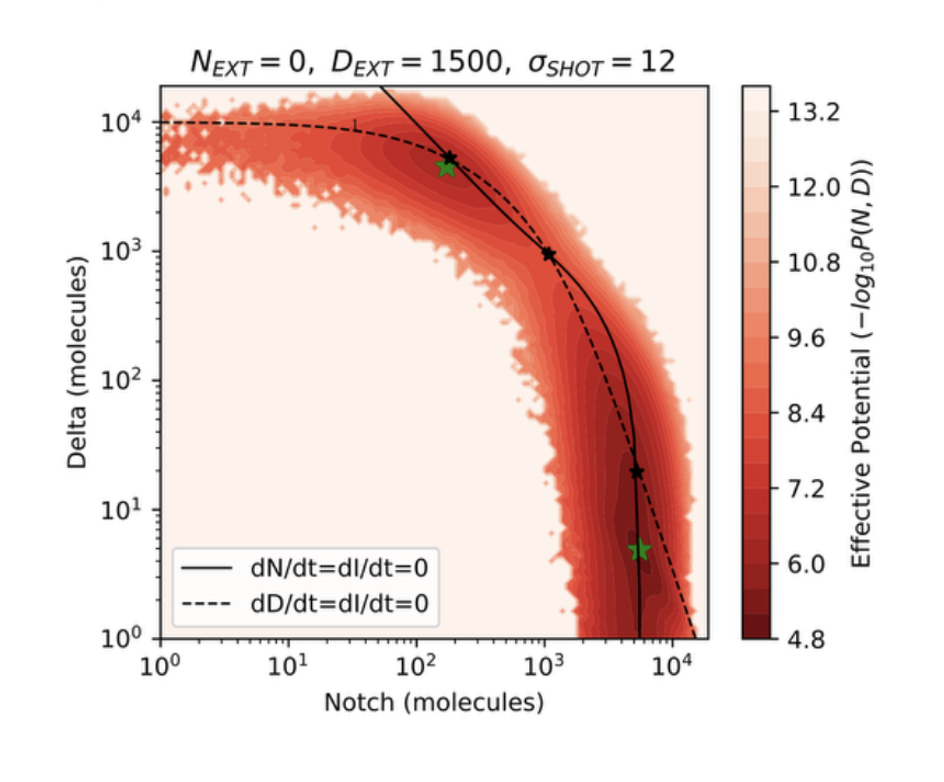
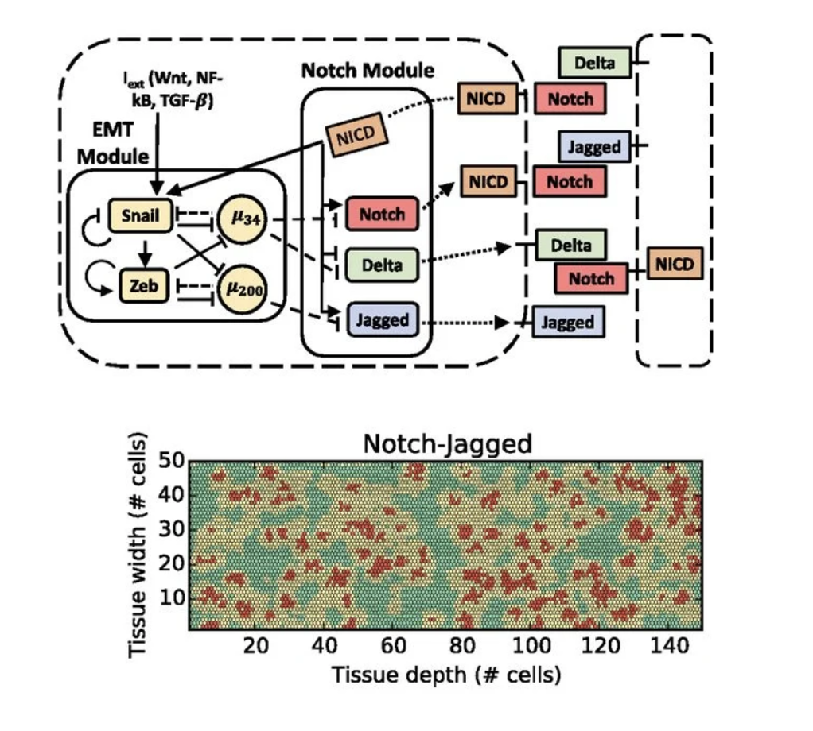

*=co-first author, #=co-senior author
Federico Bocci#, Yunlong Jia, Scott Atwood, Qing Nie#,
“Robust identification of cell-cell communication heterogeneity in single
cells” (2026) Cell systems (in press).
Hacène Medkour*, Federico Bocci*, Norman Schneider, Idalba Serrato-Pomar, Félix Rey-Cadilhac,
Yingzi Liu, Elliott F Miot, Axel A Almet, Marine Louarn, Nicolas Aubourg, Wilfried Saron,
Ghizlane Maarifi, Dorothée Missé, Qing Nie, Duncan R Smith, Sébastien Nisole, Ashley St John,
Charles Dutertre, Maksim V Plikus, Julien Pompon,
"Single-cell characterization of skin response to a bite by West Nile virus-infected mosquito
reveals fibroblast-mediated barrier to transmission" (2026) bioRxiv 2026.01. 08.698384.
Ping Wu, Federico Bocci, Christian F Guerrero-Juarez, Chih-Kuan Chen, George Wang,
Tzu-Yu Liu, Jiayi Lu, Shu-Man Hsieh Li, Yung-Chih Lai, Ting-Xin Jiang, Randall B Widelitz,
Ming-Xing Lei, Arthur D Lander, Qing Nie, Cheng-Ming Chuong,
“Regulation of feather length: FGF/IGF signaling and NOTCH/YAP modulation of progenitor cell topology”
(2025) Science Advances 11(34) eadw2382.
Manuel Barcenas*, Federico Bocci*,#, Qing Nie#,
“Tipping points in epithelial-mesenchymal lineages from single-cell transcriptomics data”
(2024) Biophysical journal 23(17) 2849-2859.
Peijie Zhou, Federico Bocci, Tiejun Li, Qing Nie,
“Spatial transition tensor of single cells”
(2024) Nature Methods 21(6) 1053-1062.
Tae-Yun Kang*, Federico Bocci*, Qing Nie, José N Onuchic, Andre Levchenko,
“Spatial-temporal order-disorder transition in angiogenic NOTCH signaling controls cell fate specification”,
(2024) eLife 12: RP89262.
Federico Bocci#, Dongya Jia, Qing Nie, Mohit Kumar Jolly, José Onuchic#,
“Theoretical and computational tools to model multistable gene regulatory networks”,
(2023) Reports of Progress in Physics 86 (10), 106601.
Julie Wiedemann, Allison C Billi, Federico Bocci, Ghaidaa Kashgari, Enze Xing, Lam C Tsoi, Leo Meller,
William R Swindell, Rachael Wasikowski, Xianying Xing, Feiyang Ma, Mehrnaz Gharaee-Kermani,
J Michelle Kahlenberg, Paul W Harms, Emanual Maverakis, Qing Nie, Johann E Gudjonsson, Bogi Andersen,
“Body site changes in skin cell composition and differential use of dual epidermal differentiation
trajectories in human palm, sole, and hip skin”,
(2023) Cell Reports 42(1) 111994.
Federico Bocci, Peijie Zhou, Qing Nie,
“spliceJAC: transition genes and state‐specific gene regulation from single‐cell transcriptome data”,
(2022) Molecular Systems Biology 18 (11), e11176.
Madeline Galbraith*, Federico Bocci*,#, José N Onuchic#,
“Stochastic fluctuations promote ordered pattern formation of cells in the Notch-Delta signaling pathway”
(2022), Plos Computational Biology 18(7), e1010306.
Federico Bocci#, Regine Schneider-Stock#, Sreeparna Banerjee#,
“Editorial: Epithelial to Mesenchymal Plasticity in Colorectal Cancer”,
(2022), Frontiers in Cell and Developmental Biology, 1315.
Samuel A Vilchez Mercedes*, Federico Bocci*, Mona Ahmed, Ian Eder, Ninghao Zhu, Herbert Levine,
José N Onuchic, Mohit Kumar Jolly, Pak Kin Wong,
“Nrf2 modulates the hybrid epithelial/mesenchymal phenotype and Notch signaling during collective cancer migration”
(2022) Frontiers in Molecular Biosciences 9:807324.
Federico Bocci, Peijie Zhou, Qing Nie,
“Single-Cell RNA-Seq Analysis Reveals the Acquisition of Cancer Stem Cell Traits and Increase of Cell–Cell Signaling during EMT Progression”
(2021) Cancers 13(22), 5726.
Samuel A Vilchez Mercedes, Federico Bocci, Herbert Levine, José N Onuchic, Mohit Kumar Jolly,
Pak Kin Wong, “Decoding leader cells in collective cancer invasion”
(2021) Nature Reviews Cancer 21:592-604.
Federico Bocci, Susmita Mandal, Tanishq Tejaswi, Mohit Kumar Jolly,
“Investigating epithelial-mesenchymal heterogeneity of tumors and circulating tumor cells with transcriptomic analysis and biophysical modeling”
(2021) Computational and Systems Oncology 1(2): e1015.
Divyoj Singh, Federico Bocci, Prakash Kulkarni, Mohit Kumar Jolly,
“Coupled feedback loops involving PAGE4, EMT and Notch signaling can give rise to non-genetic heterogeneity in prostate cancer cells”
(2021) Entropy 23(3):288.
Yutong Sha, Shuxiong Wang, Federico Bocci, Peijie Zhou, Qing Nie,
“Inference of intercellular communication and multilayer gene-regulations of Epithelial-Mesenchymal Transition from single cell Transcriptomic data”,
(2021) Frontiers in Genetics 11:170.
Federico Bocci, José Nelson Onuchic, Mohit Kumar Jolly,
“Understanding the principles of pattern formation driven by Notch signaling by integrating experiments and theoretical models”
(2020) Frontiers in Physiology 11:929.
Tae-Yun Kang, Federico Bocci, Mohit Kumar Jolly, Herbert Levine, José Nelson Onuchic, Andre Levchenko,
“Pericytes enable effective angiogenesis in the presence of pro-inflammatory signals”,
(2019) Proceedings of the National Academy of Sciences 116 (47), 23551-23561.
Federico Bocci, Mohit Kumar Jolly, José Nelson Onuchic,
“A biophysical model uncovers the size distribution of circulating tumor cell clusters across cancer types”,
(2019) Cancer Research 79 (21), 5527-5535.
Federico Bocci*, Satyendra C Tripathi*, Samuel A Vilchez Mercedes*, Jason T George, Julian P Casabar,
Pak Kin Wong, Samir M Hanash, Herbert Levine, José N Onuchic, Mohit Kumar Jolly,
“NRF2 prevents a complete Epithelial-Mesenchymal Transition and is maximally expressed in a hybrid
Epithelial/Mesenchymal phenotype” (2019), Integrative Biology 11(6):251-263.
Dongya Jia, Xuefei Li, Federico Bocci, Shubham Tripathi, Youyuan Deng, Mohit Kumar Jolly,
José N Onuchic, Herbert Levine,
“Quantifying cancer epithelial-mesenchymal plasticity and its association with stemness and immune response”
(2019) Journal of Clinical Medicine 8(5):725.
Xingcheng Lin, Prakash Kulkarni, Federico Bocci, Nicholas P Schafer, Susmita Roy, Min-Yeh Tsai,
Yanan He, Yihong Chen, Krithika Rajagopalan, Steven M Mooney, Yu Zeng, Keith Weninger, Alex Grishaev,
José N Onuchic, Herbert Levine, Peter G Wolynes, Ravi Salgia, Govindan Rangarajan, Vladimir Uversky,
John Orban, Mohit Kumar Jolly,
“Structural and Dynamical Order of a Disordered Protein: Molecular Insights into Conformational Switching of PAGE4 at the Systems Level”,
(2019) Biomolecules 22(9):2.
Federico Bocci, Mohit Kumar Jolly, Herbert Levine, José Nelson Onuchic,
“Quantitative Characteristic of ncRNA Regulation in Gene Regulatory Networks”
(2019), Methods Molecular Biology 1912:341-366.
Federico Bocci, Herbert Levine, José N Onuchic, Mohit Kumar Jolly,
“Deciphering the dynamics of Epithelial-Mesenchymal Transition and Cancer Stem Cells in tumor progression”
(2019), Current Stem Cell Reports 5(1):11-22.
Federico Bocci*, Larisa Gearhart-Serna*, Marcelo Boareto, Mariana Ribeiro, Eshel Ben-Jacob,
Gayathri R Devi, Herbert Levine, José Nelson Onuchic, Mohit Kumar Jolly,
“Toward understanding Cancer Stem Cell heterogeneity in the tumor microenvironment”
(2019), Proceedings of the National Academy of Sciences 116(1):148-157.
Federico Bocci, Mohit Kumar Jolly, Jason George, Herbert Levine, Jose Nelson Onuchic,
“A mechanism-based computational model to capture the interconnections among Epithelial-Mesenchymal
Transition, Cancer Stem Cells and Notch-Jagged signaling” (2018), Oncotarget 9(52):29906-29920.
Xingcheng Lin, Susmita Roy, Mohit Kumar Jolly, Federico Bocci, Nicholas Schafer, Min-Yeh Tsai,
Prakash Kulkarni, Yihong Chen, Yanan He, John Orban, Alexander Grishaev, Keith Weninger, Govindan
Rangarajan, Herbert Levine, Jose Nelson Onuchic,
“PAGE4 and Conformational Switching: Insights from Molecular Dynamics Simulations and Implications for Prostate Cancer”
(2018), Journal of Clinical Medicine 340(16):2422-2438.
Federico Bocci, Yoko Suzuki, Mingyang Lu, José N Onuchic,
“Role of metabolic spatiotemporal dynamics in modulating biofilm colony expansion”
(2018), Proceedings of the National Academy of Sciences 115(16):4288-4293.
Federico Bocci, Mohit K Jolly, Satyendra C Tripathi, Mitzi Aguilar, Samir M Hanash, Herbert Levine,
José N Onuchic,
“Numb prevents a complete Epithelial-Mesenchymal Transition by modulating Notch signalling”
(2017), Journal of the Royal Society Interface 14(136):2.